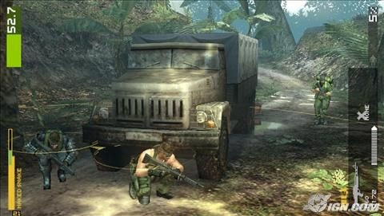
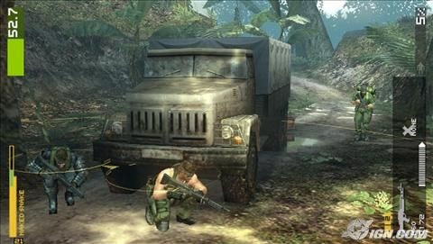

-
Главная
- Биография: Семья гения Основные даты Кино и гений
- Гениальные игры: История игр гения Metal Gear Solid
Хронология Metal Gear Solid


Metal Gear Solid 3: The Snake Eater (2004)
В The Snake Eater молодой агент FOX Нейкид Снейк отправляется в СССР, чтобы помочь бежать на Запад конструктору Соколову. В ходе операции наставница Снейка – Босс – сама переходит на сторону Советов. Миссия срывается, а полковник ГРУ Волгин, используя новейшую американскую разработку, переданную ему боссом, наносит ядерный удар по советскому ОКБ, выставляя США виновными в развязывании войны.
Через неделю Снейка опять забрасывают в сибирские «джунгли». Теперь, дабы убедить руководство СССР в непричастности США к инциденту с ОКБ, у него две задачи: разобраться с «Шагоходом» (танк Соколова, оснащенный ядерным оружием) и устранить лидера отряда «Кобра» – Босс. Операция называется «Snake Eater», ей руководит майор Дэвид О («Зеро»). Она проходит успешно, хотя Снейк теряет глаз. Он побеждает всех «кобр», Волгина и Босс, а также знакомится с молодым Оцелотом и ЕВОЙ.
 

Metal Gear Solid: Peace Walker (2010)
Хотя за «Пожирателя змей» Снейк получил благодарность и титул Большого Босса, он покинул госслужбу и создал собственную военную компанию Militaires Sans Frontières («Военные без границ»).
Однажды его помощник Казухира Миллер сообщил, что некие Рамон и Паз хотят нанять MSF, дабы очистить родную Коста-Рику от наводнивших ее войск неизвестного агрессора. Хотя заказчики выглядят крайне подозрительно и одного из них Снейк даже «раскалывает», он соглашается на предложение, когда ему демонстрируют доказательства того, что Босс жива и находится в Коста-Рике.